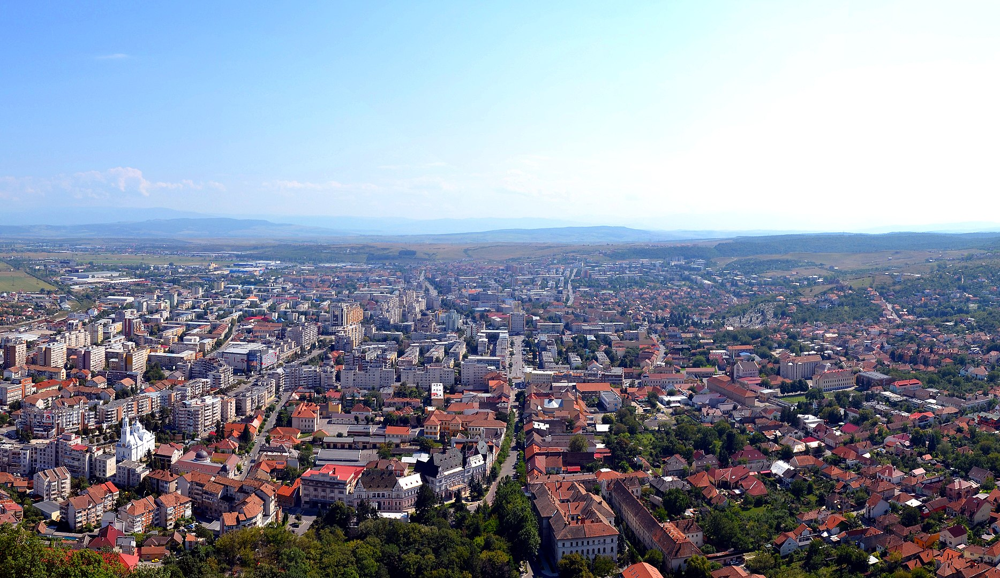
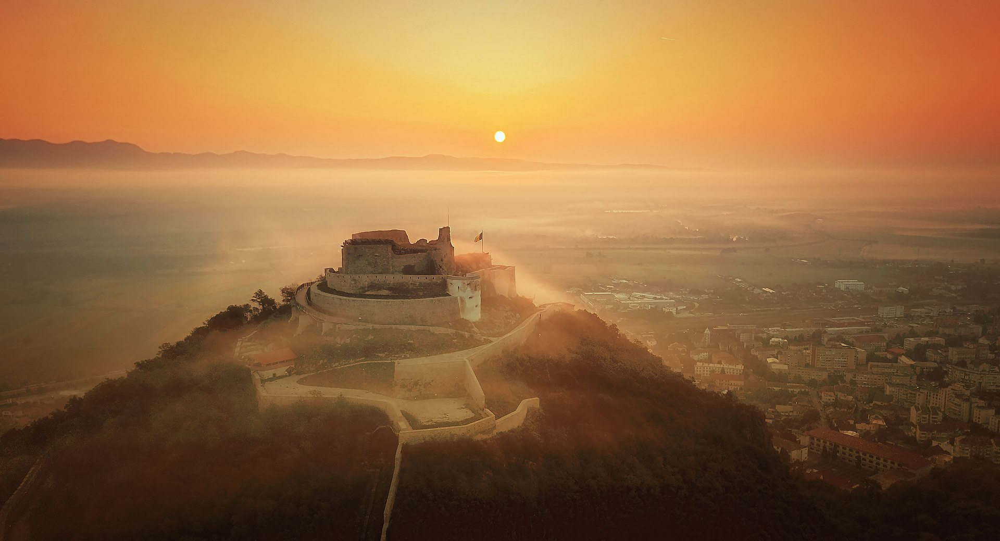
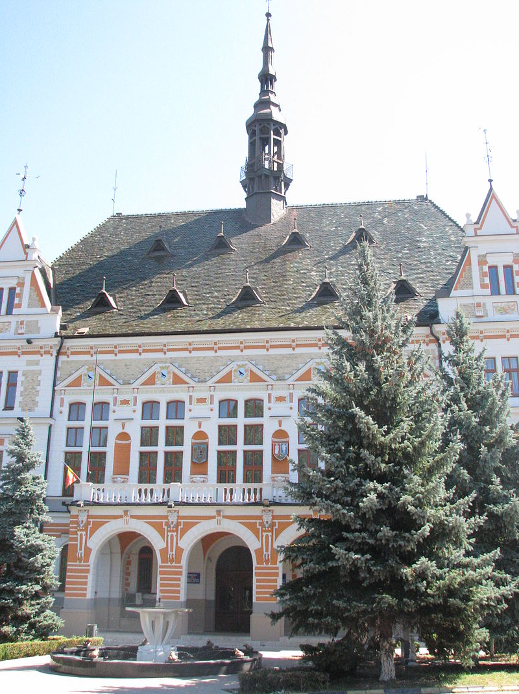
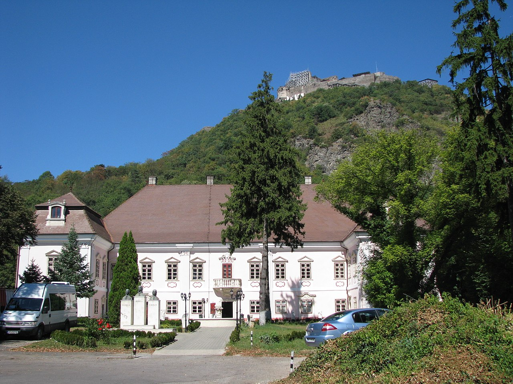
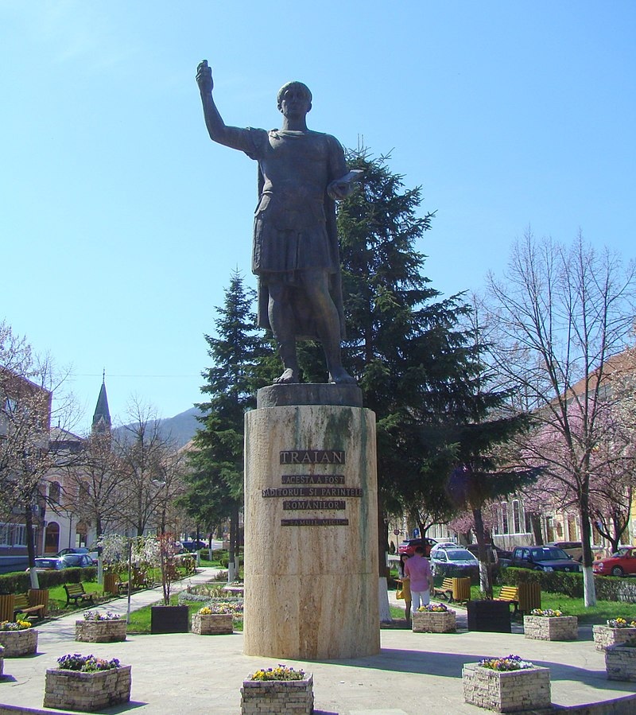
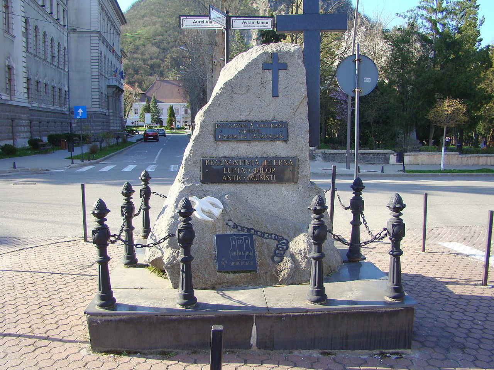
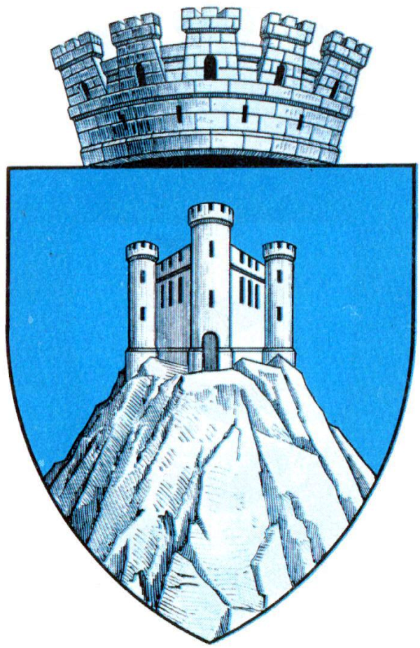
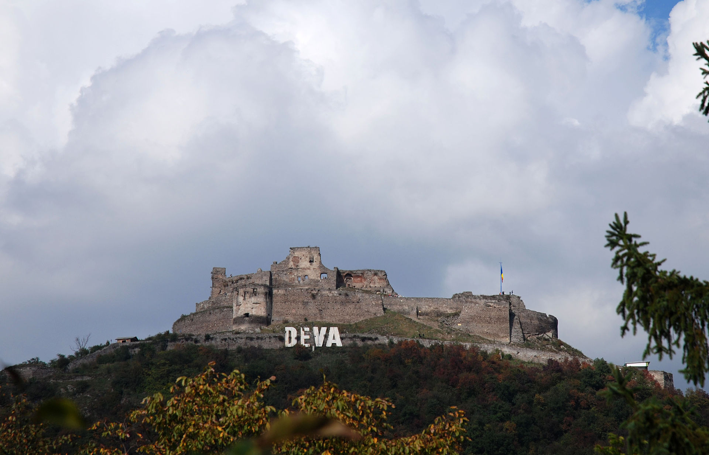
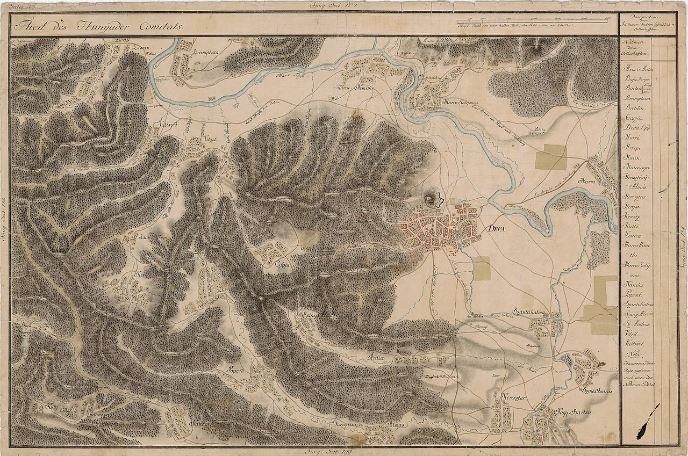
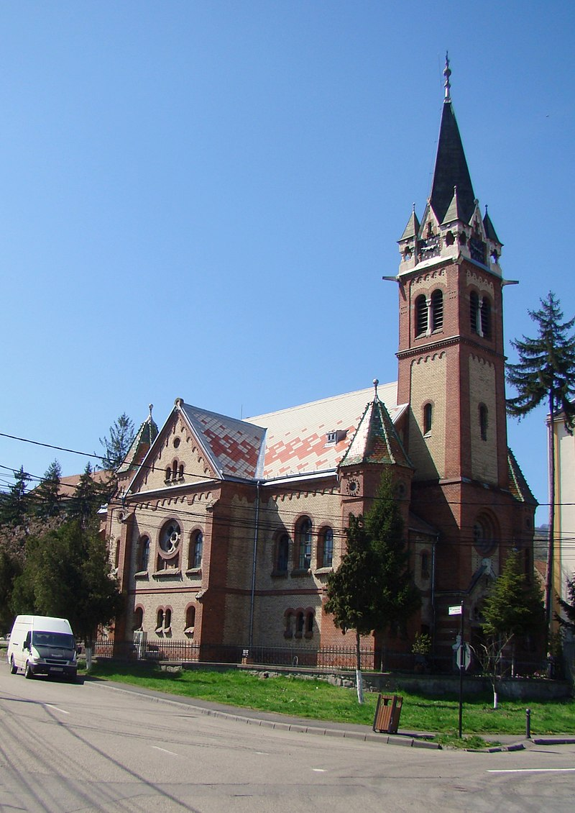

Deva se situează în partea centrală a județului Hunedoara, la o altitudine de 187 m față de nivelul mării, pe malul stâng al cursului mijlociu al Mureșului.
Orașul se învecinează cu Munții Poiana Ruscă și Munții Zarandului în vest, cu Munții Apuseni în nord, cu Măgura Uroiului în est. Spre sud, când condițiile atmosferice sunt propice, se zăresc în depărtare Munții Parâng și Munții Retezat. Dealurile din apropierea orașului sunt ultimele ramificații nordice ale Munților Poiana Ruscă (înalțimea lor maximă este de 697 metri) și cuprind orașul ca într-un semicerc, ferindu-l de excese climatice.
Deva este municipiul de reședință al județului Hunedoara, format din localitățile componente Deva și Sântuhalm, și din satele Archia, Bârcea Mică și Cristur.
S-a presupus că numele Deva este în legătură cu anticul cuvânt dac dava, care însemna „cetate”. Alte teorii susțin că numele s-ar trage de la o legiune romană care s-a transferat pe locul actualului municipiu de la Castrum Deva, acum Chester în Marea Britanie. Există argumente de ordin lingvistic care arată că toponimul Deva provine din cuvântul slav deva, care înseamnă „fecioară”.
Așezat la o altitudine relativ joasă, într-o depresiune, orașul Deva beneficiază de cea mai temperată climă din întreg Ardealul, fiind ferit de curenți. Aerul vine dinspre vest și nord-vest. De-a lungul culoarului Mureșului se simt influențe submediteraneene, iar masele de aer atlantic incărcate cu umezeală nu afectează orașul, fiind protejat de Munții Apuseni și Munții Poiana Ruscă. Verile nu sunt excesiv de călduroase, iar iernile sunt blânde, lipsite de geruri puternice.
La recensământul din 1910 Deva avea 8654 locuitori. Conform recensământului efectuat în 2011, populația municipiului Deva se ridică la 61.123 de locuitori, în scădere față de recensământul anterior din 2002, când se înregistraseră 69.257 de locuitori.
Componența etnică a municipiului Deva:
| Etnie | Procentaj |
|---|---|
| Români | 82,97% |
| Maghiari | 7,21% |
| Romi | 1,23% |
| Necunoscută | 7,84% |
| Altă etnie | 0,72% |
Componența confesională a municipiului Deva:
| Confesiune | Procentaj |
|---|---|
| Ortodocși | 76,49% |
| Romano-catolici | 6,45% |
| Reformați | 2,33% |
| Penticostali | 2,67% |
| Greco-catolici | 1,13% |
| Baptiști | 1,37% |
| Necunoscută | 8,12% |
| Altă religie | 1,38% |
Numele orașului a fost înregistrat pentru prima dată în 1269 sub numele de "castrum Dewa". Originea numelui a dat naștere la controverse. Se consideră că numele provine din vechiul cuvânt dacic "dava", care înseamnă „cetate” (ca în Pelendava, Piroboridava sau Zargidava). Alte teorii trasează numele unei legiuni romane, Legio II Augusta, transferată la Deva de la Castrum Deva, acum Chester (Deva Victrix) în Marea Britanie. János András Vistai presupune că numele este de origine turcă de la numele Gyeücsa. Alții afirmă că numele este probabil de origine slavă unde Deva sau Devín înseamnă „fată” sau „fecioară”. (Un caz similar există în limba slovacă pentru Castelul Devín, situat la confluența Dunării cu Marea Morava, la locul fostului oraș Devín.)
Dovezi documentare ale existenței orașului au apărut pentru prima dată în 1269, când Ștefan al V-lea, regele Ungariei și ducele Transilvaniei, a menționat „castelul regal al Devei” într-un acord de privilegiu pentru contele Chyl de Kelling (comitele Chyl din Câlnic).
Până în 1920 a fost reședința comitatului Hunedoara, apoi a județului Hunedoara (perioada interbelică). Tribunalul din Deva s-a aflat sub jurisdicția Curții de Apel Cluj, până la desființarea curților de apel în anul 1952. Din 1992 se află sub jurisdicția Curții de Apel Alba Iulia. Între 1952-1968 a fost reședința Regiunii Hunedoara, una din cele 18, apoi (din 1960) una din cele 16 regiuni ale României comuniste.
Monument istoric și de arhitectură laică, Cetatea medievală a Devei a fost construită la mijlocul secolului al XIII-lea pe Dealul Cetății, un con vulcanic cu altitudinea de 378 m.
Cetatea a început să capete valoare militară de abia în secolul al XVII-lea. După ce turcii cuceresc Oradea, cetatea de la Deva rămâne singura neocupată. Cetatea regală a Devei care cuprindea un domeniu întins a intrat în 1444 în posesia lui Ioan de Hunedoara, voievodul Transilvaniei. Alături de ea au fost preluate și 56 de sate, precum și minele de aur din Munții Apuseni, care aparțineau domeniului cetății. Tot în timpul său este menționat pentru prima dată într-un document scris și târgul Devei, așezare aflată la baza dealului. Familia Corvinilor își încheie stăpânirea asupra cetății și domeniului Devei în 1504. În a doua jumătatea a secolului al XVII-lea, principele Gabriel Bethlen construiște în cetate un bastion care servea drept închisoare și loc de tortură. La baza sa, ridică în stil renascentist un adevărat palat de locuit: Palatul Magna Curia.
În 1657 a fost ocupată de otomani. În timpul răscoalei lui Rákóczi, în 1704, cetatea cade în mâinile curuților. Din 1713 încep lucrări de transformare a cetății într-o fortificație bastionară. Între 1717–1719, cetatea este din nou întărită. În 1752, chiar dacă importanța ei militară a scăzut, cetatea este reînnoită. În 1784, cetatea a fost atacată în timpul răscoalei țărănimii iobage din Transilvania, printre care s-au aflat și moții Horia, Cloșca și Crișan. Din acel moment, cetatea Deva nu a mai avut funcționalitate militară. Noul proprietar va fi Pogány Franciska, golind întreaga cetate care va cădea rapid în ruină. În 1817, împăratul Francisc I și soția sa aflați în vizită în Transilvania, impresionați de frumusețea locului, au poruncit refacerea Cetății Devei. Lucrările au durat 12 ani.
În timpul revoluției maghiare din 1848–1849, cetatea se afla în mâinile soldaților austrieci aflați sub conducerea comandantului Kudlich. Lupte au avut loc doar după eliberarea Transilvaniei de Nord de către generalul polonez Bem. În februarie 1849, aici au ajuns și revoluționarii conduși de Avram Iancu, ca prieteni ai austriecilor. Revoluționarii maghiari au reușit să ocupe cetatea, devenind astfel din cele trei cetăți ocupate de honvezi, după Buda și Arad.
În dimineața zilei de 13 august 1849, magazia cu praf de pușcă a fortăreței explodează. Cetatea este distrusă în mare parte, în explozie pierind și soldații din garnizoana cetății. A fost dărâmată toată latura de est a cetății. În 18 august 1849, aici a capitulat generalul Bem în fața trupelor habsburgice.
Ruinele Cetății Deva, de pe Dealu Cetății, au fost și rămân un obiectiv turistic important. În ultimii ani a fost conceput un program de amenajare a Cetății, proiect foarte controversat, pentru a o pune în valoare și a o face accesibilă tuturor vârstelor: instalarea unui telescaun și amenajarea unei terase în incinta fortificației (idee abandonată ulterior la insistențele reprezentanților Muzeului Deva). Odată ajuns sus lângă ruinele cetății, ni se dezvăluie panorama orașului și a împrejurimilor. Se vorbește despre existența unui tunel subteran care unea Cetatea Devei de Castelul de la Hunedoara. Câțiva kilometri mai departe, pentru week-end sau cantonamente sportive: Cabana Căprioara reprezintă o altă atracție, accesibila cu mașina sau pe jos, fiind amplasată pe DJ707 ieșind din Deva pe strada Aurel Vlaicu.
La poalele dealului se întinde „Parcul Cetății”. La intrarea dinspre sud a parcului se află casa lui Dr. Petru Groza („casa fără acoperiș” cum îi spun locuitorii vârstnici), care se preconizează a fi transformată în muzeu memorial. În centrul parcului rezistă de decenii chioșcul orchestrei, aflat în paragină. În nord-vestul parcului, la marginea dinspre dealul cetății, se află castelul Magna Curia, construit în secolul XVI. Inițial castelul a fost conceput în stilul Renașterii, dar restaurările ulterioare (din timpul lui Gabriel Bethlen, în anul 1621, precum și cele din prima jumătate a secolului XVIII) i-au adăugat și elemente de artă barocă. În prezent complexul arhitectonic Magna Curia adăpostește Muzeul Județean Deva (secțiile de istorie și științe naturale).
La marginea de est a parcului este fostul Liceu Sportiv, astazi Colegiu National Sportiv „Cetate” Deva, renumit pentru generațiile de gimnaste precum: Nadia Comăneci (sub îndrumarea antrenorului Bela Karolyi), Ecaterina Szabo (antrenori Octavian Belu și Mariana Bitang), Daniela Silivaș nascută în Deva, ș.a. Olimpicele au fiecare câte o statuie-bust. După sala de sport se ascunde „Stadionul Cetate”, unde evoluează echipa de fotbal „Mureșul Deva”, terenul de antrenamente, terenuri de tenis de câmp și Complexul Aqualand (țara apei). Proiectul de amenajare a cetății a fost în final realizat cu plecarea cabinei din acest punct: parcarea stadionului. Un loc strategic pentru organizarea Orășelului copiilor sau târgului de Crăciun, pentru turiști sau autohtoni, printre care vor fi cu siguranță amatori să vadă și sa filmeze orașul de la înălțimea cetățuii.
De-a lungul străzii pietonale a orașului și pe străzile adiacente, încă mai rezistă clădiri caracteristice ale altor epoci: Palatul Tribunalului, Judecătoria, Parchetul Județean, Colegiul Național Decebal, renovat în 2004, Teatrul de Revistă al Devei, fostul sediu al Băncii Naționale, Primăria, Biserica Reformată, restaurantul Casina (fostul Bachus si mai inapoi cazarma militara), Liceul Pedagogic „Sabin Drăgoi” și Școala Generală „Regina Maria” — care împreună sunt cunoscute localnicilor drept Centrul Vechi. Bisericile Ortodoxe și cea Catolică, îndrumă localnici și turiști, la reculegere, la cunoașterea talentelor care au contribuit la forma lor de astăzi (interioare minunate, icoane, scene murale, sau statuile catolice), la recunoașterea armoniei cu orașul. Într-un cartier limitrof parcului, vizita orașului poate fi completată cu Mănăstirea Franciscană.
În Deva există o statuie a împăratului Traian, precum și mai multe statui ale lui Decebal. Casa de Cultură poartă numele interpretului Drăgan Muntean. Un alt obiectiv memorial este Cimitirul Eroilor Sovietici, situat pe strada Călugăreni, strada care urcă din spatele Casei de Cultură. Pe bulevardul Decebal funcționează o galerie de artă.
Vedere a orașului de pe dealul cetății
Cetatea Devei
Teatrul de artă

Prefectura Hunedoara

Palatul Magna Curia

Statuia împăratului Traian

Monumentul luptătorilor anticomuniști

Stema municipiului Deva

Cetatea Devei

Deva în Harta Iosefină

Biserica reformată